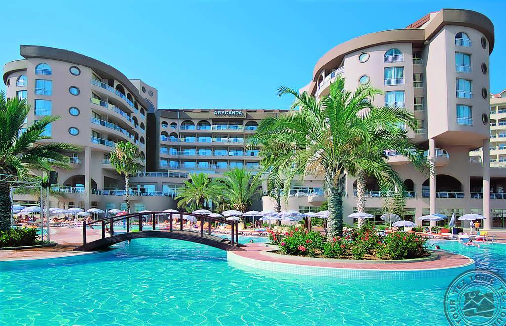

Превосходный 5-звездочный отель Royal Hotel Adam & Eve в городе Белеке рекомендуется для любителей пляжного отдыха.
Адам и Ева находится в окружении сосновых деревьев и расположен на бесконечном песчаном пляже в районе Белека.
В нескольких минутах ходьбы находится центр Белека с его магазинами, ресторанами, барами и кафе.
Отель предлагает ультра-шикарные модные номера в белом минималистском стиле, дизайнерские номера в основном здании и эксклюзивные
виллы. Особенности отеля включают в себя различные бассейны, в том числе бассейн с горками.
Украшенный почти 5000000 маленьких зеркал, отель Адам и Ева располагает несколькими ресторанами, а также уникальным баром длиной
96 метров. Гости могут насладиться полной релаксацией в превосходной зоне СПА. Этот необычный отельный комплекс на побережье
Средиземного моря с уютным интерьером жилых помещений — настоящий кусочек рая на земле.
RLimak Lara De Luxe Hotel & Resort

Kemerağzı Mahallesi, Lara Turizm Yolu, 07110 Muratpaşa/Antalya, Турция
Расположенный на популярном курорте Lara Beach, гостиничный комплекс VIP-уровня Limak Lara Deluxe отлично подходит для пар и семей, для незабываемого отдыха в уединенном месте курорта Анталья. Пятизвездочный отель предлагает роскошные номера всего лишь в нескольких шагах от прекрасного пляжа на побережье Средиземного моря.
У гостей, предпочитающих активный отдых, есть большой выбор мероприятий, включая водные виды спорта, теннис, мини-гольф, игры и многое другое. Для серьезной релаксации и расслабления можно заняться процедурами в СПА-центре отеля с паровой баней, крытым бассейном и гидромассажной ванной.
Лимак Лара Делюкс имеет целый ряд международных кухонь, предлагаемых в его ресторанах, в том числе: индийскую, итальянскую, японскую, мексиканскую, тайскую и турецкую. В этом отельном комплексе есть все для удовлетворения вкуса даже самых изысканных гурманов! Также вы получаете 8 баров на выбор, в том числе бар у бассейна и дискотеки,
так что вы всегда недалеко от коктейля или холодного пива.
Водные виды спорта, множество развлечений, шикарных ресторанов и баров, зона СПА — все это в сочетании с теплым и дружественным персоналом отеля, готовым помочь в любом случае, создает атмосферу незабываемого отдыха в Турции.
Если вы ищете для отдыха отличную пятизвездочную недвижимость у моря в Алании,
то Кирман Ариканда Де Люкс является идеальным местом для проживания. В нескольких минутах ходьбы от отеля
находится песчано-галечный пляж Окурджалар и аквапарк Water Planet.
В уютных номерах этого отеля туристы чувствуют себя как дома. В каждом номере есть ванная комната.
Удобная зона отдыха СПА с фитнес-центром, джакузи, сауной и хаммамом предлагает возможность расслабиться.
На территории гостиницы есть крытый и открытые бассейны.
Для любителей пляжного отдыха, которые ищут в Текирове хороший отель, рекомендуем отель
с собственным песчано-галечным пляжем, 1 линия, на побережье Средиземного моря Queens Park Resort. Обслуживание в отеле по типу «ультра все включено». В пешей доступности находится Эко-Парк. Основные достопримечательности в окрестностях: руины города древней Ликии,
Фаселиса и гора Тахталы (Олимпос).На территории отельного комплекса площадью 60 000 м2 расположены несколько
двухэтажных вилл и пятиэтажное здание. Есть возможность занятий спортом в фитнес-центре и расслабления в джакузи.